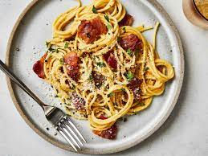

Recipes
Guacamole

You need to add 17 things to this document. (Make sure to number them just as I did in the example.)
It may be helpful to copy and paste this list and then fill it in as you go along.
All image names must start with your location, e.g yellowstone_sunset.jpg unless you are using a link from the internet.
Taco

For a simple taco recipe, start by cooking ground beef (or your choice of protein) in a pan until browned, seasoning it with taco spices like cumin, chili powder, garlic powder, onion powder, paprika, and salt.
Warm corn or flour tortillas in a dry skillet or microwave.
Assemble the tacos by placing the cooked meat on the tortillas, then top with shredded lettuce, diced tomatoes, grated cheese
Chocolate Chip Banana Bread
Preheat the oven to 350º. Line a 9"-by-5" loaf pan with parchment and grease with cooking spray. In a medium bowl, whisk flour, baking soda, and salt. In a large bowl, mix egg, egg yolk, granulated sugar, butter, sour cream, and vanilla. Add bananas and stir until combined. Gradually add dry ingredients to banana mixture until just combined. Fold in walnuts and chocolate chips and transfer to prepared pan. Bake bread until a tester inserted into the center comes out clean, about 1 hour. Let cool 10 minutes in pan, then invert onto a wire rack and let cool completely.
Spaghetti Carbonara
Classic carbonara is made with spaghetti, eggs, Parmesan cheese, pancetta, and pepper. Cook the pasta, and in a separate pan, cook the pancetta until crisp. Combine the pasta with the pancetta, then mix in a mixture of eggs and cheese, allowing the heat of the pasta to cook the eggs. Serve immediately with extra grated Parmesan.
Margherita Pizza

Start with a base of homemade or store-bought pizza dough. Top with a simple tomato sauce, slices of fresh mozzarella cheese, and fresh basil leaves. Bake in a hot oven until the crust is golden and the cheese is bubbly. Drizzle with olive oil and a pinch of salt before serving.